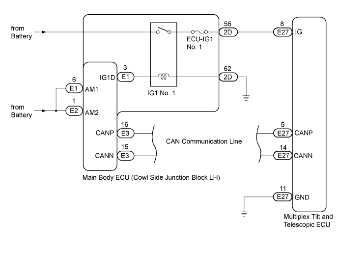

DTC B2602 Key Unlock Warning Switch Circuit Malfunction |
DTC B2606 Key Code Confirm Signal Malfunction |
| DTC Code | Detection Condition | Trouble Area |
| B2602 | Both of the following conditions continue:
|
|
| B2606 | IG signals and/or key code confirmation signals are not received correctly. |
|

| 1.CHECK OTHER DTC OUTPUT |
Check if DTC B2621 is output.
| DTC Condition | Proceed to |
| B2621 is not output | A |
| B2621 is output | B |
|
| ||||
| A | |
| 2.READ VALUE USING INTELLIGENT TESTER (COMMUNICATION STATE OF ENGINE SWITCH AND KEY CODE) |
Use the Data List to check if the communication of the key code and the engine switch are functioning properly.
| Tester Display | Measurement Item/Range | Normal Condition | Diagnostic Note |
| IG Switch (CAN) | Communication state of engine switch/ON or OFF | ON: Communication normal OFF: Communication interrupted | - |
| Key Code Confirm (CAN) | Communication state of key code confirmation signal/ON or OFF | ON: Communication normal OFF: Communication interrupted | - |
|
| ||||
| OK | |
| 3.RECONFIRM DTC |
Clear the DTCs (Click here).
Check for DTCs (Click here).
|
| ||||
| OK | ||
| ||